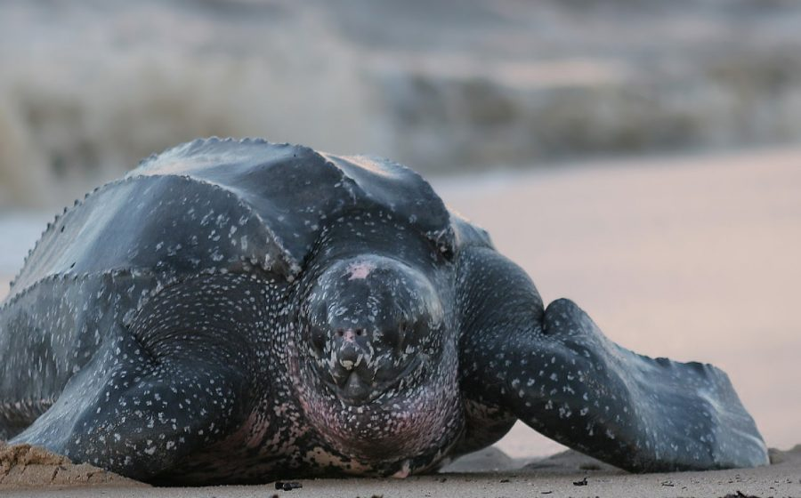
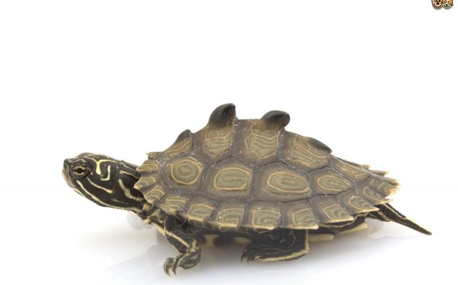
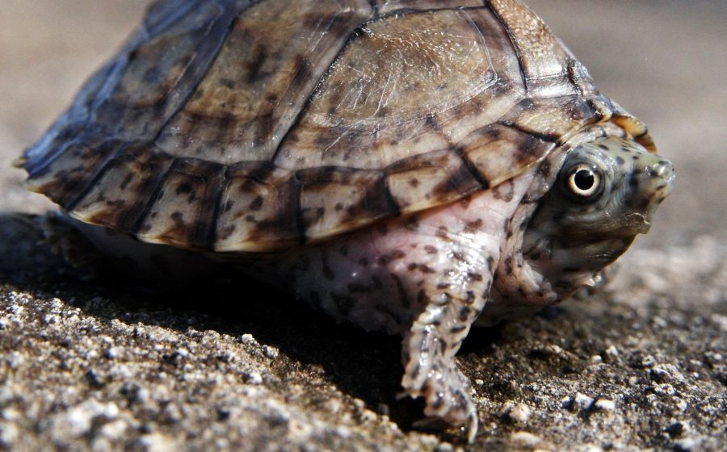

Snapping Turtle
The common snapping turtle is a large freshwater turtle of the family Chelydridae.

Mississippi Map Turtle
The Mississippi map turtle (Graptemys pseudogeographica kohni) is a subspecies of land and water turtle belonging to the family Emydidae. G. p. kohni is endemic to the central United States.

Musk Turtle
Mississippi is home to a number of freshwater turtles. This tank includes the Yellow-blotched Sawback Turtle, a species found only in the Pascagoula River (called an endemic species).